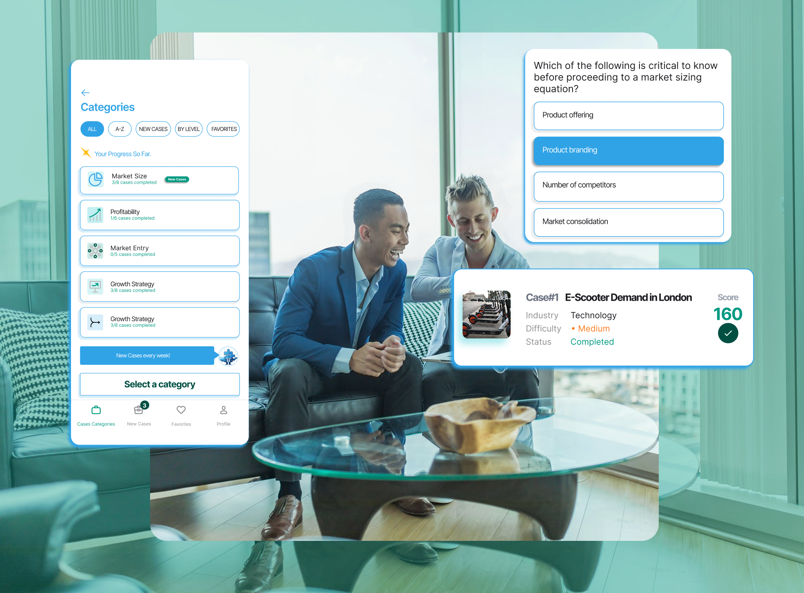
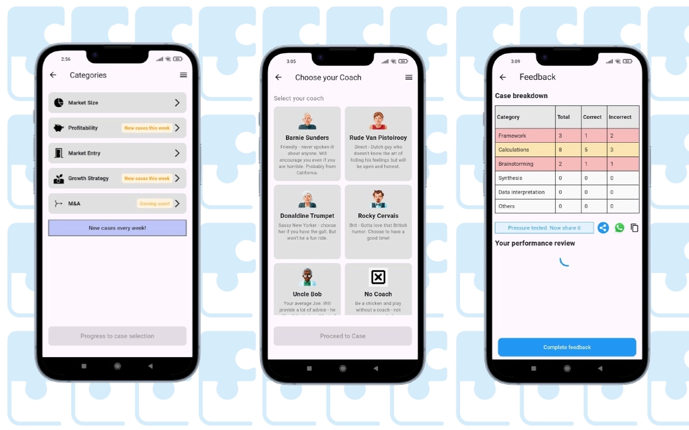
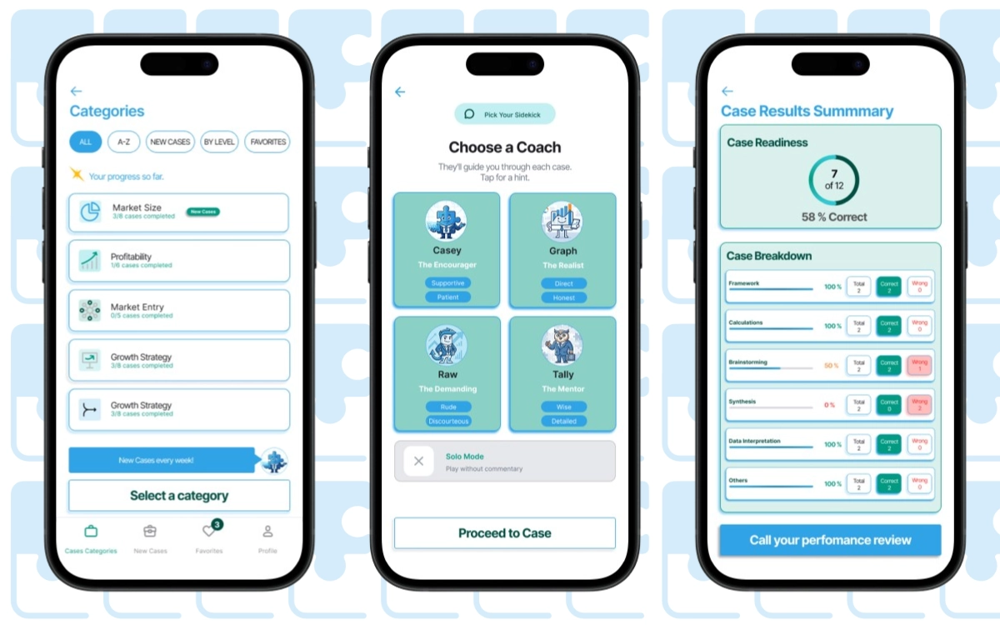
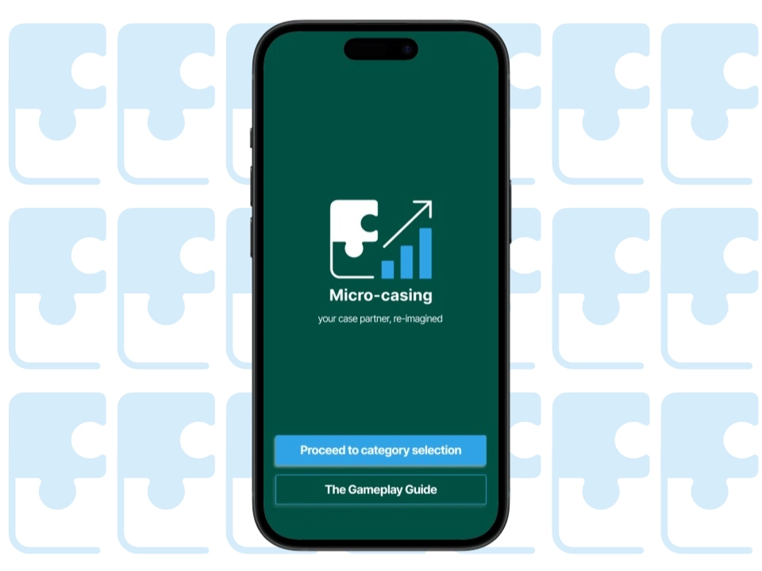
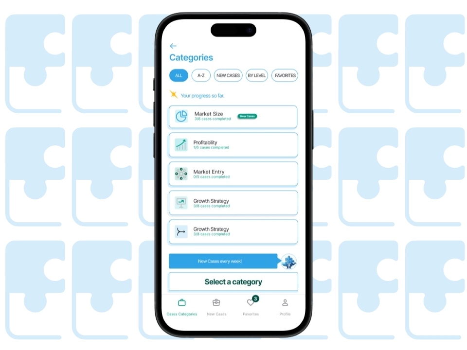
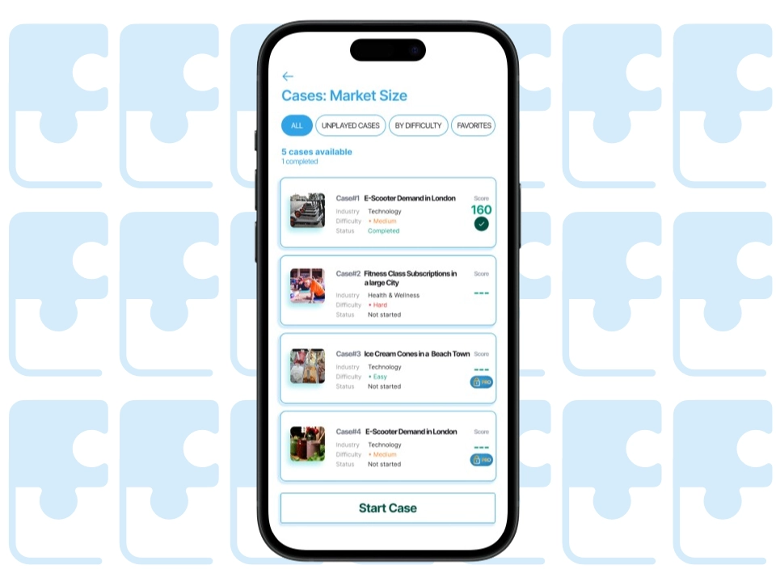
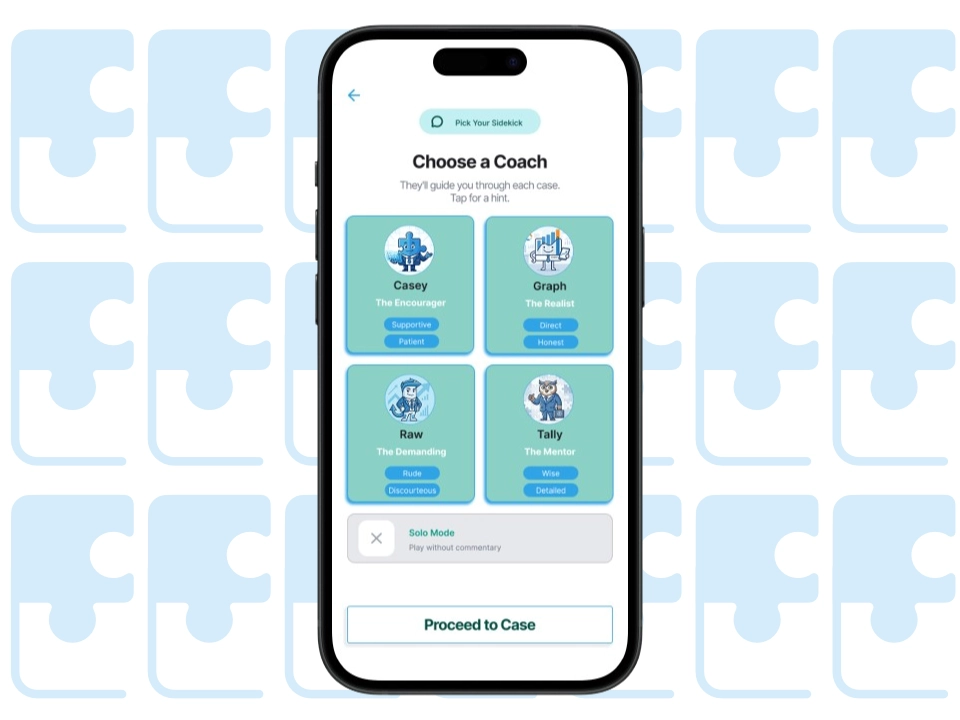
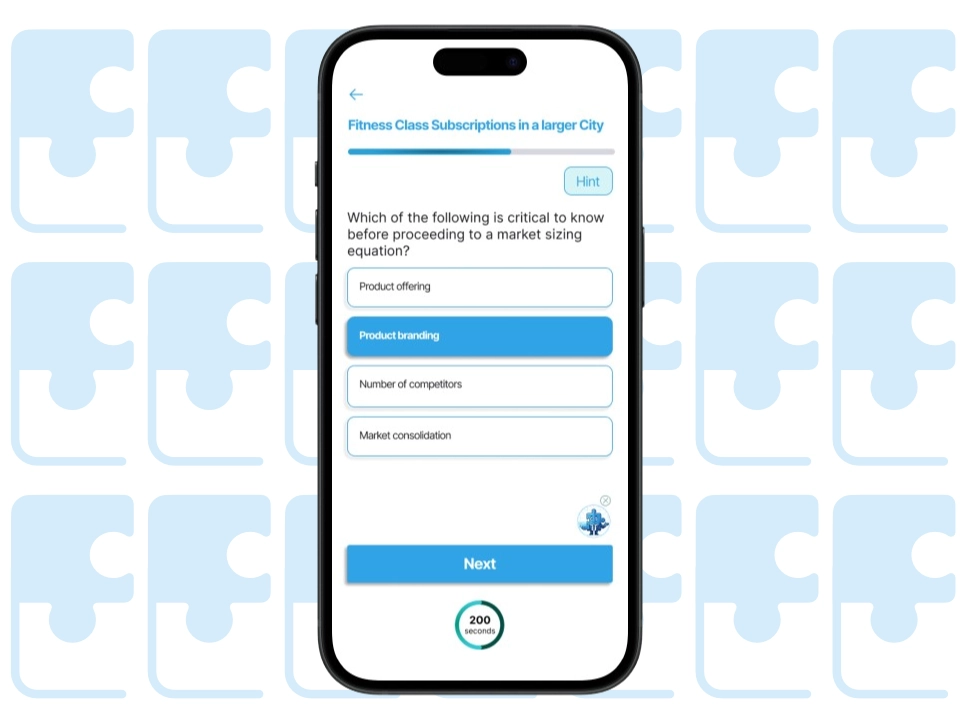
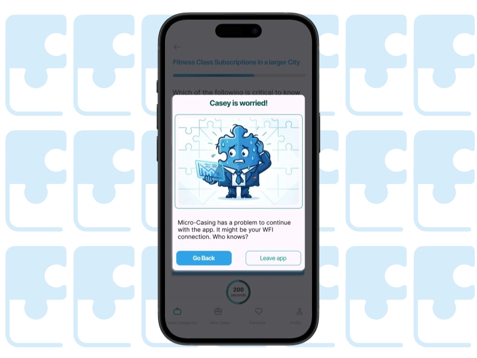

Micro-casing is a mobile app that replaces $200/hour coaching with 400-second gamified case studies, making consulting interview prep fast, affordable, and sustainable for anyone competing for a spot at McKinsey, BCG, or Bain.
Traditional prep is slow, expensive, and hard to stick to. Micro-casing flips the model: bite-sized cases on your commute, built on the same decision-making framework top coaches use.
The result: 2.84% download-to-paid conversion by day 35, 8 active subscription plans, and +700% subscriber growth since launch, driven entirely by freemium onboarding.

Micro-casing had been built from AI-generated wireframes with no design system behind it. The UX audit mapped four specific failures, each one blocking a different part of the product.
Fragmented visual identity. No shared tokens, no hierarchy logic, no component consistency. Every screen made the user rebuild context from scratch, creating cognitive load before a single case was attempted.
Broken navigation and user control. Users were locked into a single forced flow. No bottom nav, no way to backtrack, no access to profile or filtering. The product grew its case library weekly but gave users no way to orient inside it.
Misaligned copy and tone of voice. Gaming language and consulting authority were competing in the same interface. The result was a product that felt neither credible enough for serious prep nor approachable enough to open daily.
Cognitive overload at critical touchpoints. The case results screen, the moment where users decide to continue or quit, was cluttered with redundant information. Drop-off was happening exactly where engagement needed to peak.
Mini UI Kit cut implementation ambiguity. A component library with colours, typography, and iconography gave engineers a single source of truth. No guessing specs, no revision loops. The team shipped faster because every pattern was already defined and reusable.
High-fidelity prototype aligned the team before a line of code was written. Eight complete flows with interaction logic let developers see exact behaviour, transitions, and edge cases upfront. Decisions that would have surfaced mid-sprint were resolved in Figma.
Scalable content architecture removed design as a bottleneck. A filtering system built around difficulty, category, and new releases means new cases plug directly into the existing structure. The content library can grow every week without requiring a design intervention.
The inherited file had no component logic, no prototype flows, and no consistent visual system. The engineering team was building from static mockups with no interaction spec.
These three deliverables changed how the team worked: a shared component language, a prototype that replaced written specs, and a content structure that scaled without design dependency.
Three parallel workstreams ran simultaneously to establish a strategic foundation before any design decision was made.
Before: AI-generated wireframes

After: Redesigned experience

"I worked with Juan for my app's (Micro-casing) UX,UI design. Juan was very thorough and very professional, and I had a great time working with him. His discipline in learning about the customer journey in the industry related to the app was very much appreciated."






The redesign launched in February 2026 across the App Store and Google Play. The following metrics reflect real performance data from both platforms since release.